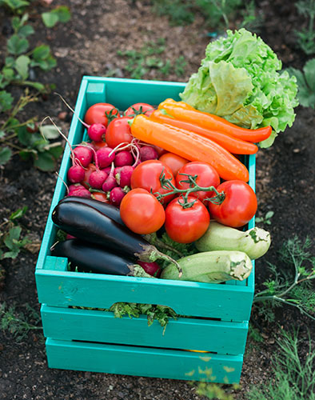
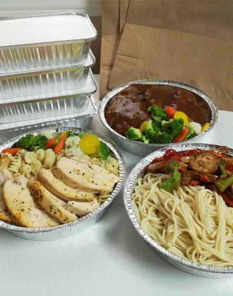
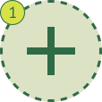
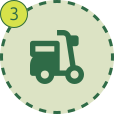
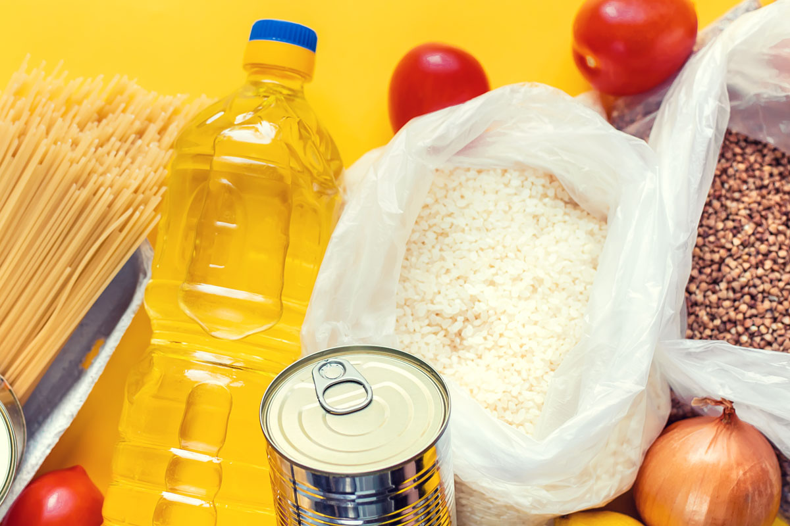

1,05 bi t
Desperdício no mundo
1,05 bilhão de toneladas de alimentos desperdiçadas no mundo em 2022; 28% em serviços de alimentação e 12% no varejo.
Fonte: PNUMA, Food Waste Index Report 2024 (abre em nova aba)
Seus dados não serão salvos neste navegador.
Alimento que sobra para um estabelecimento pode fazer diferença para uma instituição.
Contexto
Todos os dias, padarias, restaurantes, mercados e hortifrútis jogam fora comida que ainda está boa para comer. Não é falta de vontade: doar dá trabalho.

É preciso achar quem receba, combinar um horário e fazer tudo isso antes de o alimento estragar. Quando o dia acaba, o mais rápido é o lixo.
Enquanto isso, ONGs, cozinhas comunitárias e abrigos têm menos comida do que pessoas para atender.
Quem ganha com a solução: famílias em insegurança alimentar atendidas por instituições sociais.
Quem usa a plataforma: o responsável pelo estabelecimento, que doa, e o coordenador da instituição, que recebe.

Dados reais
1,05 bi t
1,05 bilhão de toneladas de alimentos desperdiçadas no mundo em 2022; 28% em serviços de alimentação e 12% no varejo.
Fonte: PNUMA, Food Waste Index Report 2024 (abre em nova aba)
27,6%
Cerca de 27,6% dos domicílios brasileiros tinham algum grau de insegurança alimentar em 2023.
Lei 14.016
A Lei 14.016/2020 autoriza a doação de excedentes próprios para consumo e protege o doador de boa-fé.
Nossa proposta
Uma vitrine de excedentes: o estabelecimento cadastra, a instituição reserva e a plataforma registra a conexão e mostra o impacto.

Informa o alimento, a quantidade em kg, a validade, o bairro e o horário de retirada.
Busca por categoria, bairro ou validade e clica em "Tenho interesse" no que atende a sua necessidade.

A tela mostra onde e quando retirar, e o painel de impacto soma os quilos que deixaram de ser desperdiçados.
Agenda 2030
O projeto contribui para quatro ODS da Agenda 2030 da ONU.
Principal
Leva alimento bom a instituições que atendem famílias em insegurança alimentar.
Aproxima comércios e instituições do mesmo bairro, fortalecendo a rede local.
Alimento que não vai para o aterro deixa de virar gás de efeito estufa.
Complementar
Ajuda a reduzir o desperdício de alimentos no varejo e nos serviços de alimentação.
Para estabelecimentos
Cadastre o excedente e escolha o horário de retirada. A instituição vê na hora.
Cadastrar excedente